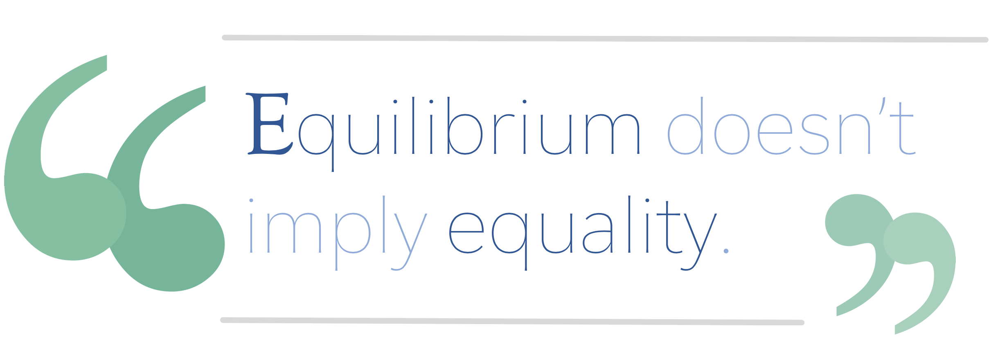

Thyme's Up
American corporations have predominated third-world farmers for far too long, but nonprofits provide hope.
1. Losing Balance
Sources: Flickr, Growing a Nation, Listverse, Timeline of History of Environmentalism, ThoughtCo
Historically, agricultural modernization involved a delicate balance between environmentalism and industrialization, regulation and commercialization; between investing in tomorrow's research or addressing today's poverty. Environmentalism helped alleviate some of the consequences of industrialization, especially through pollution laws passed during the environmental movement in the 1960s and 1970s. Regulatory agencies such as the FDA and USDA minimized commercial misconduct to protect the America public. And Foreign Policy accredits today's "modern, science-intensive, and highly capitalized agricultural system" with the research of new foods that helped feed the growing population. Over time, competing forces reached an equilibrium: environmentalists counteracted industrialization's potential for ecological damage, regulation reined in commercial exploitation, and breakthroughs in research ensured that the increasing population would be fed with a greater supply of food.

But equilibrium doesn't imply equality. Many of these institutions preserve a balance only by maintaining a barrier to entry against farmers looking to join the global food market. Environmentalism is an important issue to first-world countries which have the capacity to sacrifice subsistence for conservation, but overzealous environmentalists often hinder agricultural industrialization in developing countries that still need to meet their demand for food. Moreover, the power of American regulatory agencies only stretches within national borders, and the politicians that administer these agencies are only incentivized to answer to their domestic constituents. Companies incorporated in the United States continue to exploit farmers abroad, "pillaging poor nations, destroying forests to produce the palm oil used in a multitude of goods from soap to cakes, [and] putting five-year-olds to work fruit-picking and killing orangutans," as reported by the Financial Times. And today's "science-intensive and highly capitalized" research into proprietary seeds and other GMOs has unfairly concentrated influence to "corporations that control not only food processing and distribution but farm inputs and seed patents," according to the Los Angeles Times. By undermining third-world farmers looking to industrialize, and consequently reducing competition, counterbalancing forces such as environmentalism, regulation, and public patents are actually empowering the corporations they were initially established to restrain. Agricultural balance will perpetuate inequality as long as it maintains industrialization as a barrier to entry, so external funding is the only hope for farmers looking to modernize and compete against today's predominant corporations.
2. Securing Investment
Source: United Nations World Investment Report 2017
Third-world farmers will need to claim a role in agriculture's ongoing narrative by modernizing, balance notwithstanding. Foreign Policy contends that "wherever the rural poor have gained access to improved roads, modern seeds, less expensive fertilizer, electrical power, and better schools and clinics, their productivity and their income have increased." These farmers will need massive investments, especially since "Western aid for agricultural development in poor countries fell by almost half," but they need to recognize that the source of funding is even more important than the amount. Commercial initiatives should be welcomed but not relied upon. Corporate investment is often ephemeral; companies may withdraw from projects or investments as soon as profits decline, regardless of how it may impact farmers and their communities. This indifference of corporations has produced a calamity in which "hundreds of millions of people who go hungry cannot create a sufficient 'market demand' for the fruits of the Earth," in the words of the Los Angeles Times. Even when companies decide to fund development in third-world countries, their investments usually don't prioritize the interests of farmers they employ. The Financial Times reports that "companies' ultimate obligation is to shareholders, not to smallholders in Ecuador or Angola." Is there a better source of funding than corporations for third-world farmers needing to industrialize?
3. Nonprofit Potential
Sources: Our World in Data, FoodReference.com
The term "industrialization" often carries the baggage of commercial exploitation and environmental ruin, but nonprofit-driven industrialization has admirably gained the American public's respect. In the New York Times, Justin Gillis describes how "[f]orty years ago, a third of the population in the developing world was undernourished, [but by] the tail end of the Green Revolution, in the mid-1990s, the share had fallen below 20 percent, and the absolute number of hungry people dipped below 800 million for the first time in modern history." Gillis's heartening statistic reassures the public that agricultural industrialization persists for a noble cause.

Dr. Norman Borlaug examines an emergency shipment of his new high-yield wheat seeds
Public opinion of agricultural industrialization has also benefited from the generosity of the forces behind it. Soon after Dr. Norman Borlaug won the Nobel Peace Prize in 1970 for pioneering industrial-scale production of new wheat varieties and "provid[ing] bread for a hungry world," the New York Times reported how leading researchers "founded an international network of research centers to focus on the world's major crops." As researchers who targeted reducing hunger over increasing profits, they further reinforced the positive reputation of agricultural industrialization. Nonprofits took notice of the massive humanitarian potential in modernizing agriculture in regions such as Latin America and Asia, and they became the primary benefactors of agricultural research and development. Foreign Policy asserts that "international assistance from the Rockefeller Foundation, the Ford Foundation, and donor governments led by the United States made Asia's original Green Revolution possible." Without profit as a motive, nonprofits were able to prioritize community impact over raw output when providing support to farmers, cementing their status as both an effective and principled source of assistance. Despite the negative connotations of industrialization, nonprofits provide the most creditable source of funding for third-world farmers looking to modernize and compete in the global food market.
4. Need for Seed
Today, nonprofits are already taking action against inequality in agriculture. One Acre Fund's Farmers First approach emphasizes that industrializing African farmers is "everything we do." They provide training on modern agricultural techniques and supply the latest seeds, measuring their success not by sales or dividends, but by their farmers' income growth. Last year, farmers were able to achieve a staggering 71% increase in revenue by modernizing with One Acre Fund. If you agree that it's time for third-world farmers to industrialize and compete against reigning corporations, you can donate to One Acre Fund directly. Alternatively, you can install a Google Chrome extension I published, which inconspicuously donates a portion of your Amazon purchases to any charity of your choice, at no added cost to you thanks to Amazon Smile. Your support in modernizing African farmers goes far beyond improving communities and providing much-needed aid. It promotes the democratic ideal that an American agricultural executive and an impoverished Kenyan farmer can sow the same seeds and feed the same families. Nonprofits are sending a clear message to the dominant corporations reaping the benefits of today's oppressive equilibrium in agriculture: your time is up too.